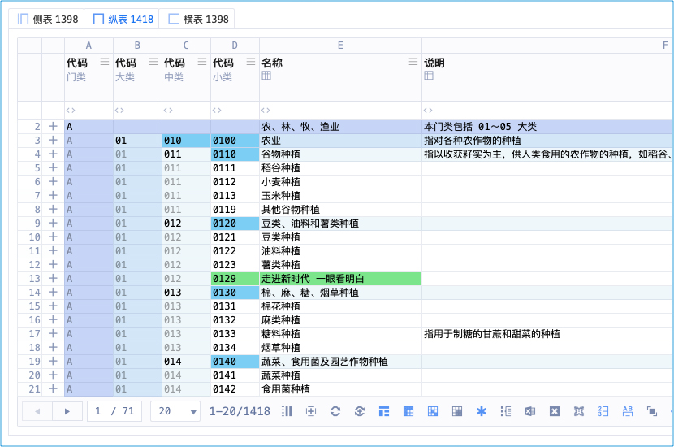
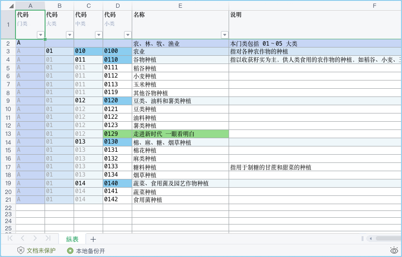
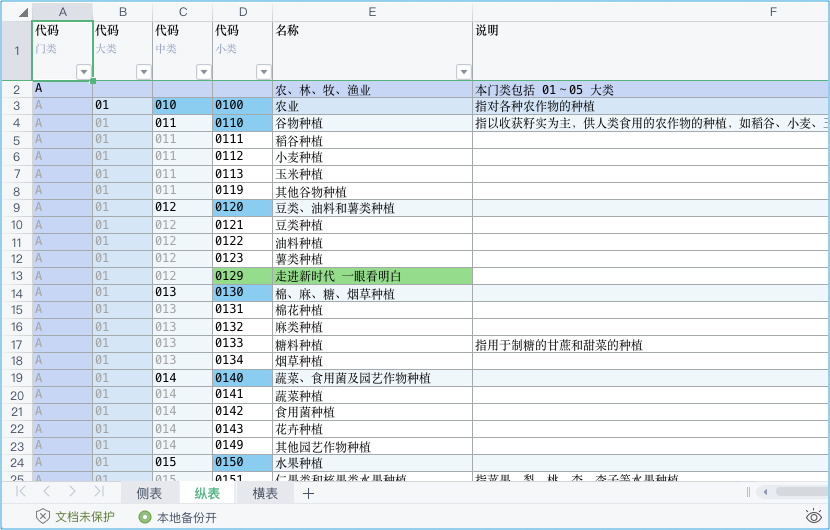

百川归宗
简称：归宗
诗
《百川归宗》
百川东去远山明，长风乱石飞鸟惊。
归宗清平会有时，断弦残曲知音听。
一叶归宗
线上武表（系统、能用武功的、高级的）：

线下文表（Excel、文文静静的、好看的）：

一叶归宗：一页（叶）归使用者（宗）
无论你对线上表格做任何的操作，线上表格都能1:1变成Excel表格
此功能画面太多，图片不足以表现，抖音西瓜、微信的视频号，搜 ca3wBEST / ca3w麦修行 看视频
一川归宗
一川归宗：一个表格（川）归使用者（宗）
无论你对线上表格做任何的操作，线上表格都能1:1变成Excel表格
此功能画面太多，图片不足以表现，抖音西瓜、微信的视频号，搜 ca3wBEST / ca3w麦修行 看视频
集剑归宗

集剑归宗：集合多个表格（剑）归使用者（宗）
无论你对线上表格做任何的操作，线上表格都能1:1变成Excel表格
此功能画面太多，图片不足以表现，抖音西瓜、微信的视频号，搜 ca3wBEST / ca3w麦修行 看视频
无相归宗
无需任何操作、1:1自动变成Excel、归你
每天凌晨系统自动把全部重要表，发送到你设定的邮箱里（高维上色的Excel）
现实世界
认证机构信息管理系统 中的 「导出」
导出Excel，一叶/一川/集剑=非常高级的导出Excel，无相=线上武表转为本地文表
武侠世界
天下第一内功
五绝：中禅师 · 觉空禅师 的 成名绝技
穿越主在第二次营救行动前，于「大慈悲寺」拜佛之际，
觉空禅师基于：李煜有恩于「大慈悲寺」、自己发誓不涉江湖、见穿越主一身正气等诸多的原因
将整个江湖武林人士都觊觎的天下第一内功《百川归宗》、以及自己70年的功力一并传于穿越主
寄希望于穿越主能够救出李煜，而后觉空禅师便圆寂了......
自学到什么程度
只需要知道自由对等导出，比以前的、做成死的那种，好太多，就行了
至于你需要按哪个快捷键，实际用的时候再琢磨、再实际的按，轻松会
术语对照
| 武学术语 | 系统术语 | 说明 |
|---|---|---|
| 归宗 | 导出 | 导出Excel |
| 百川归宗 | 百表导出 | 川是表（表就是山川、山川就是表） |
| 一叶归宗 | 一页导出 | 叶通页 |
| 一川归宗 | 一表导出 | 川是表 |
| 集剑归宗 | 集表导出 | 剑是表（表就是剑、剑就是表） |
| 无相归宗 | 无操作导出 | 无需任何操作、1:1自动变成Excel、归你 |
会在你本地形成一套「Excel+文件包」的组合，那里面有重要的数据，你有这个放心用云端
作者笔记
导出的Excel，永远和你所见的「情形」一摸一样
「情形」包括：神驭/虚界（前后宽高、显隐）、雕栏破碎、飞针、大行、星注等等
文武表：
武表：线上的表格、能用武功的
文表：导出的表格、文文静静的（Excel）
说白了：「武表」可以变成「文表」，变的那一刻：「武表」是什么样、「文表」就是什么样
就比如：
你把某个列（任何），调宽调成150，归宗导出的Excel，列宽就是150
再调成300，那导出的Excel，就是300
雕栏破碎调成「碎态」，那导出的就是「碎态」
飞针调成「有颜色的」，那导出的就是「有颜色的」
大行调成「大行模式」，那导出的就是「大行模式」
星注调成「有注释的」，那导出的就是「有注释的」
一句话：不管什么表「导出的Excel」 永远跟你 「线上的表」 近乎一模一样，就是这么神奇
| 招式 | 首拼音首字母 | 快捷键（神意夺心爪） |
|---|---|---|
| 一叶归宗 | 归宗的归 Guī G | Control + G 、 Command + G |
| 一川归宗 | 归宗的归 Guī G | Control + Shift + G 、 Command + Shift + G |
| 集剑归宗 | 不常用 不用记 | Control + P 、 Command + P |